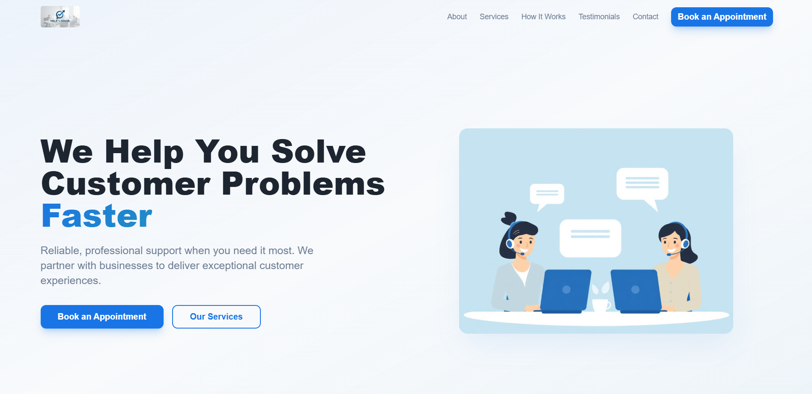
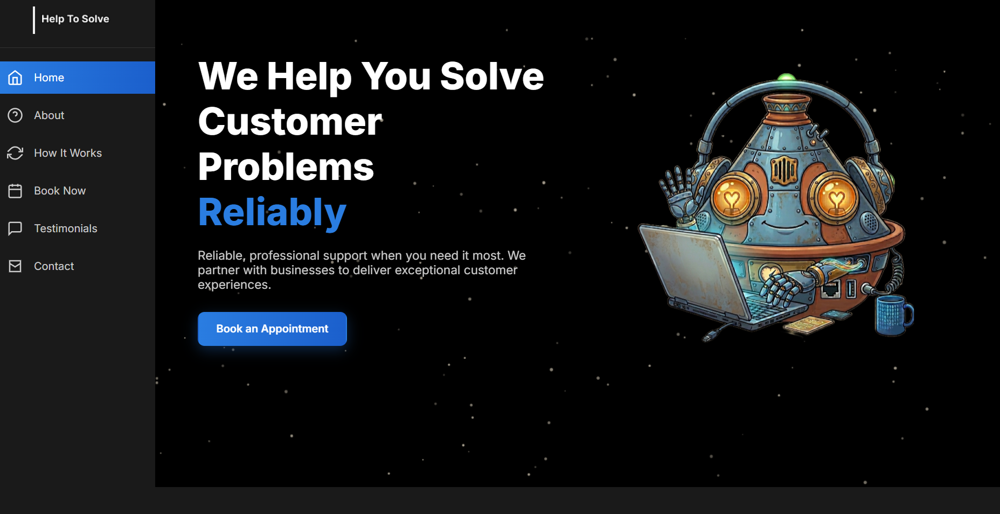

Overview In this project I was tasked by a client to improve the design and usability of their website. Help to solve is a brand new start up based in Rabat, Morocco, that offers technical support services for companies. The primary goal was to create a simple, intuitive experience that allows users to quickly contact support or book an appointment. A secondary goal was to introduce a distinct brand identity that would help the company stand out in a competitive market..

The original website suffered from a multitude of issues particularly in the hero section. What was noticeable to me at first glance was the repetition and multitude of different calls to action within one page which could place burden on the cognitive capacities of users. The second issue was the nav bar on the top. The entire website was singular with no links leading to a separate page, however a nav bar like this makes it appear as if each of these options were on a separate page. Finally, the website lacked a distinctive brand identity, making it feel generic and difficult to differentiate from similar services.

I focused on simplifying the experience and strengthening the brand. The hero section was redesigned to include a single, clear call to action, allowing users to quickly understand the main goal and act without distraction.
The top navigation was replaced with a scroll-based sidebar, giving users a clearer sense of progression throughout the page. As users scroll, the active section is highlighted, helping them understand where they are and easily navigate to other sections.
To address the lack of identity, I introduced a more playful and memorable visual direction inspired by Moroccan culture. This included creating a character called “Taji,” which adds personality to the interface.
Additionally I added animation to the page in order to bring more life to it by adding typing animation in the heading which changes the blue highlighted word to a few different variations. While Taji gently floats with stars flying behind him.
This project taught me the importance of clarity and prioritization in UX design. Small decisions can significantly improve usability and user flow. I also learned how combining usability with a strong visual identity can elevate a product from functional to memorable. Balancing simplicity with personality is something I aim to continue developing in future projects.